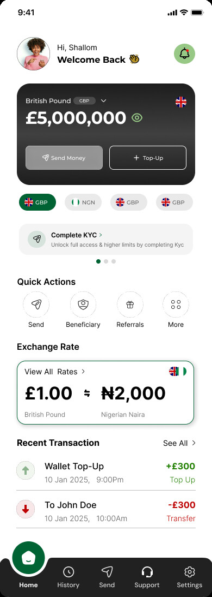
Redesigning cross-border remittance for the UK–Nigeria corridor. 150+ screens. Progressive KYC. Trust-building UX that moved the business forward.
DiscoverNew-user app funnel, before vs after launch. Tracked in UXCam, then PostHog.
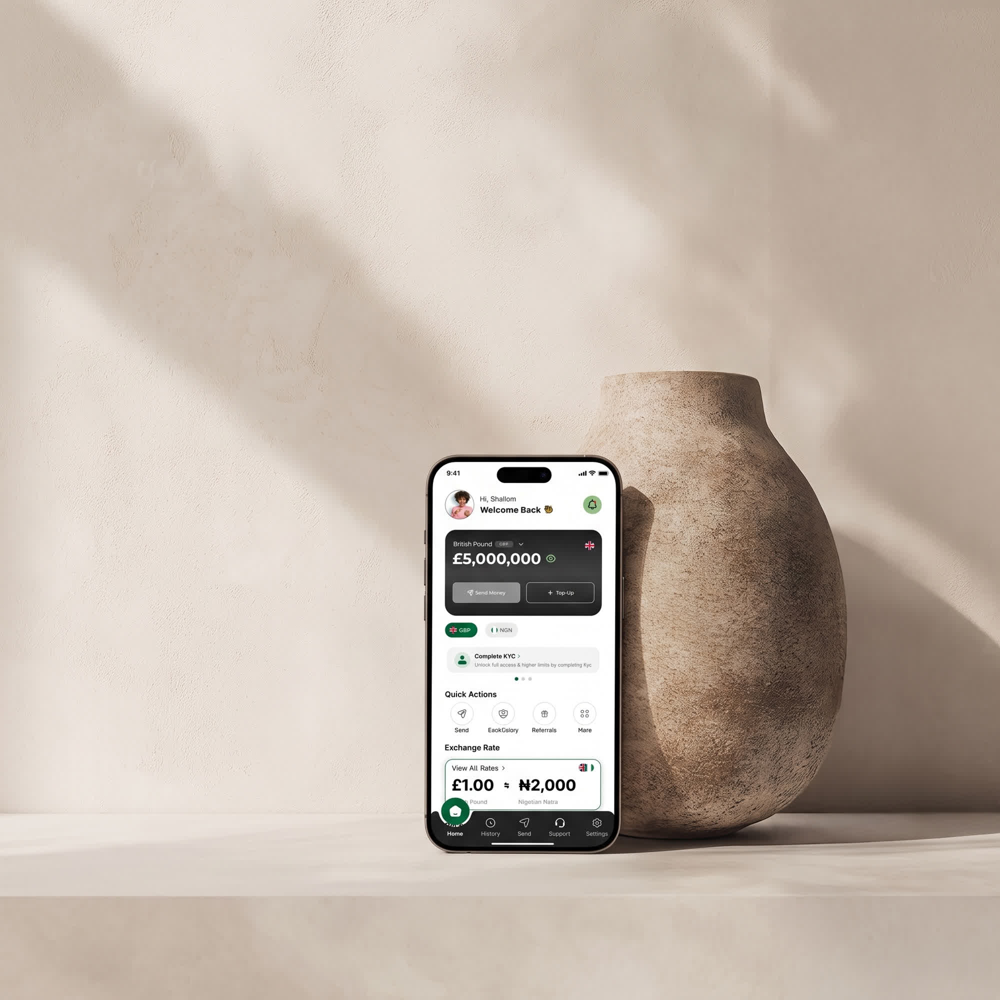
BroadMoney (formerly BroadMoney Transfer) had a functioning cross-border payment app for UK-to-Nigeria remittances — but 54.75% of users were dropping off before completing their first transaction. Microsoft Clarity data revealed the root causes: rage taps on the marketing site hit 0.17%, dead clicks sat at 9.19%, and the pre-redesign mobile app front-loaded all KYC requirements into a single hostile wall of forms.
Users who had already committed to sending money to family in Nigeria were abandoning at the verification step. The dashboard displayed wallet balances in cramped cards that couldn't show full amounts. Transaction history lacked status indicators — no way to distinguish pending, successful, or failed transfers. The business needed a full redesign to reduce drop-off, build user trust, and increase first-transaction completion.
Solo designer working directly with the founder and the engineering team. I owned the full design process end-to-end — research, information architecture, high-fidelity UI across 150+ screens, design system, and post-launch analytics monitoring. No prior design system existed. Every screen had to satisfy FCA compliance requirements for cross-border money transfers. I set up Microsoft Clarity for website analytics tracking rage taps, dead clicks, quick backs, and scroll depth, and UXCam and PostHog for mobile app behavioral analytics — session recordings, funnel analysis, and heatmaps.
I conducted competitive UX analysis against Wise and Lemfi alongside usability testing with 8 participants (4 internal, 4 external), directly informing iterations that tightened flow efficiency across onboarding and send-money journeys.
The onboarding sequence sets the tone for the entire product relationship. I designed a three-step introduction that communicates the app's core value proposition — easy money transfer, security, and low fees — using real photography of the target demographic to build immediate trust and cultural familiarity. Each screen leads with a clear headline and two-action pattern: "Next" to continue exploring, "Skip" for returning users who want to get straight to registration.
The original app front-loaded all 14 compliance data points into one form — creating a wall of bureaucracy before users could even see their dashboard. I broke KYC into contextual steps that surface at the moment they're needed. Users verify their identity when they first send, add proof of address when they hit the £1,000 limit. The liveness check uses a guided facial recognition flow with clear progress indicators ("Step 1 of 3") and warm instructional copy. Users complete compliance naturally as they use the product, not as a gate before they start.
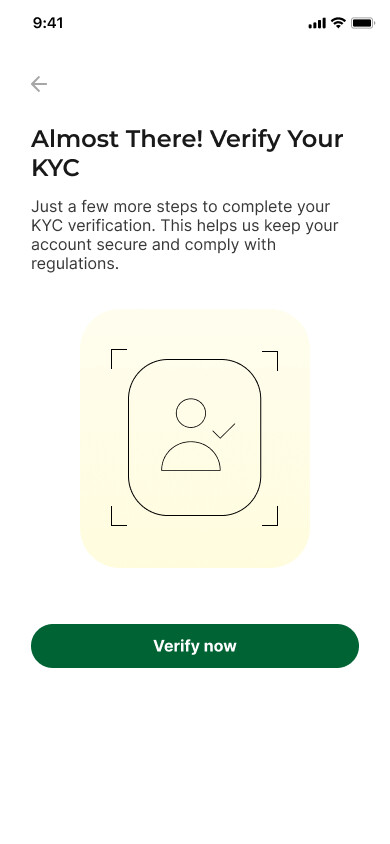
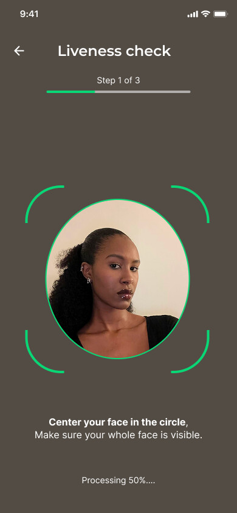
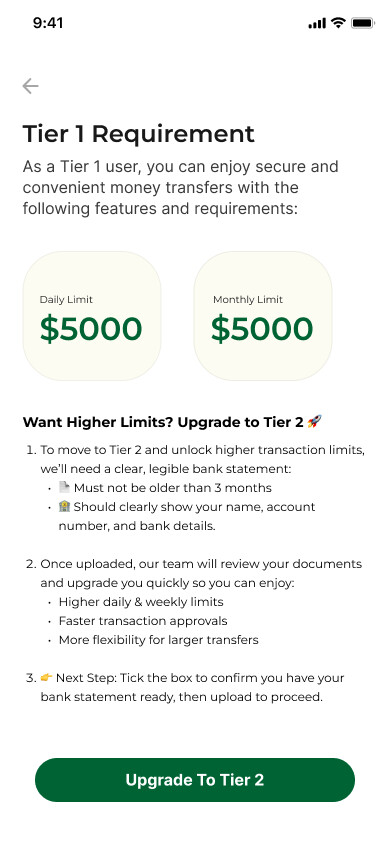
User testing revealed the original dashboard's wallet cards were too tight — amounts like £5,000,000 couldn't display in full, breaking user trust in an app that handles their money. I redesigned the dashboard with a full-width card that shows the balance boldly and prominently, with currency tabs (GBP, NGN) as pill selectors below. The new layout puts "Send Money" and "Top-Up" as primary CTAs directly on the card, reducing the tap count to the most critical action from 3 to 1.
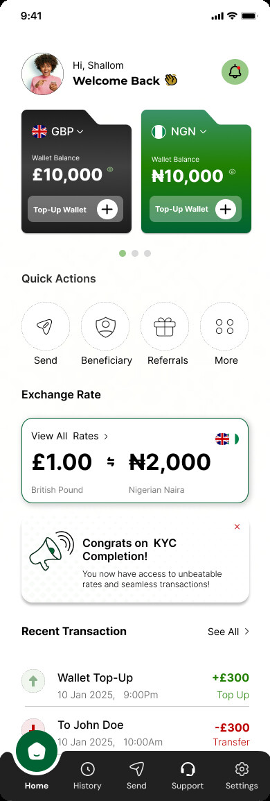
Cramped dual-card layout. Large amounts get truncated. No primary CTA on balance card.
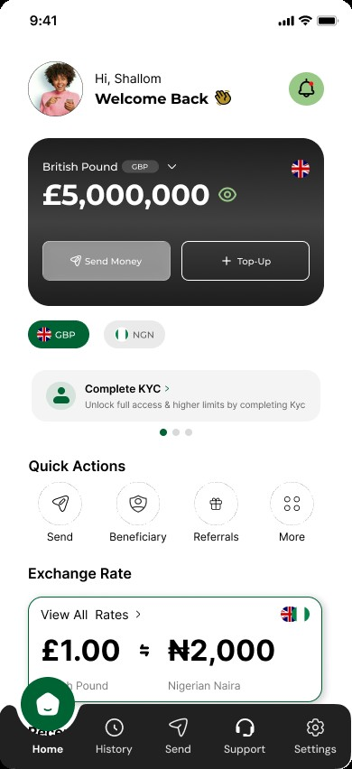
Full-width card, bold balance display. Send + Top-Up CTAs on card. Currency tabs as pills.
The send money flow is the product's reason for existing. I designed it to answer the three questions users care about in order: How much will the recipient get? (live exchange rate shown before amount entry), Who am I sending to? (contact book-style beneficiary list, not a form), and Is this going to work? (clear transaction summary with every fee, rate, and arrival time visible before confirmation). The "you'll receive" amount is the hero — not the "you're sending" amount — flipping the typical remittance mental model to match what actually matters.
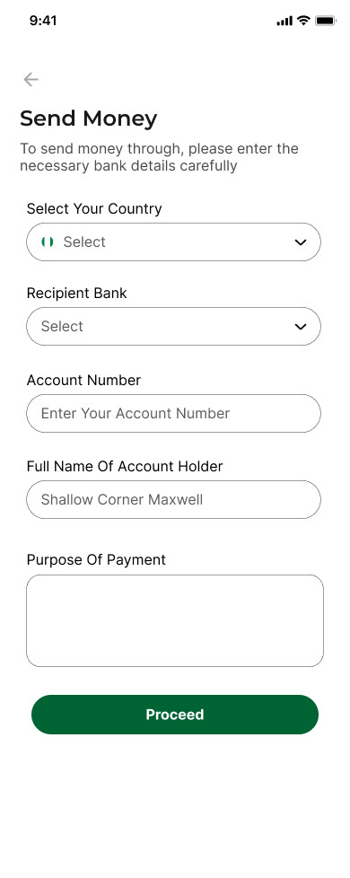
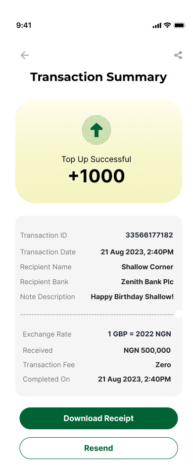
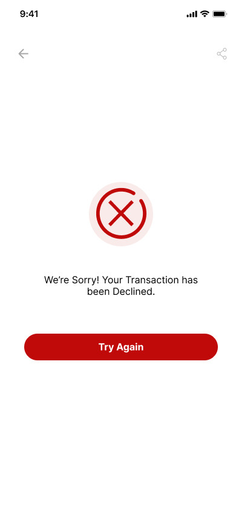
The original transaction history was a flat, undifferentiated list with no status indicators. Users had no way to tell whether a transfer was pending, completed, or failed — generating support tickets for information the app should have surfaced. The redesign introduced status badges (Success, Pending, Failed) with color-coded indicators, time-grouped sections (Today, Yesterday, dated), richer transaction details, and filter tabs for quick scanning. An "AI Insights Available" chip hints at the analytics layer being built into the product.
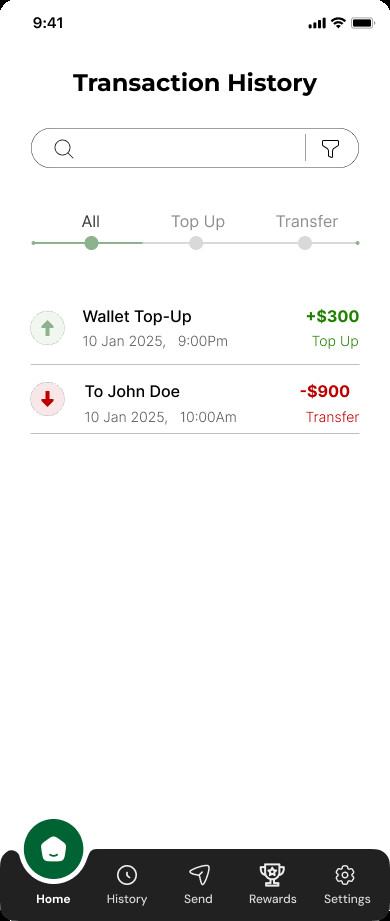
Flat list, no status indicators. Users can't tell if transfers are pending or failed.
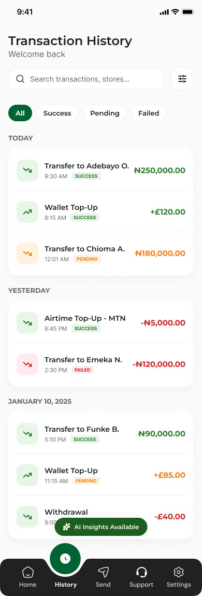
Status badges, time-grouped sections, filter tabs, AI insights chip. Information hierarchy that reduces support tickets.
Four design decisions shaped the final product. Each involved a trade-off I had to defend — and each moved the metrics in the right direction.
Instead of front-loading all compliance data points into one form, I broke KYC into contextual steps that surface at the moment they're needed. Users complete compliance naturally as they use the product.
Every transaction shows the live exchange rate, exact fee, and estimated arrival time before confirmation. The "you'll receive" amount is the hero — matching what the recipient actually cares about.
Replaced the cramped dual-card layout with a single bold card that shows the full balance, currency tabs, and primary CTAs. Reduced tap count to the most critical action from 3 to 1.
Established continuous behavioral monitoring via Microsoft Clarity, UXCam, and PostHog — using session recordings, heatmaps, rage tap data, and funnel analysis to prioritize fixes across every design sprint.
Beyond the mobile app, I redesigned the full web dashboard — wallet management, transaction history, customer support, and the Naira-to-GBP send money flow. The web app mirrors the mobile design system while taking advantage of the larger canvas for data-dense views like transaction tables and multi-currency wallet management.
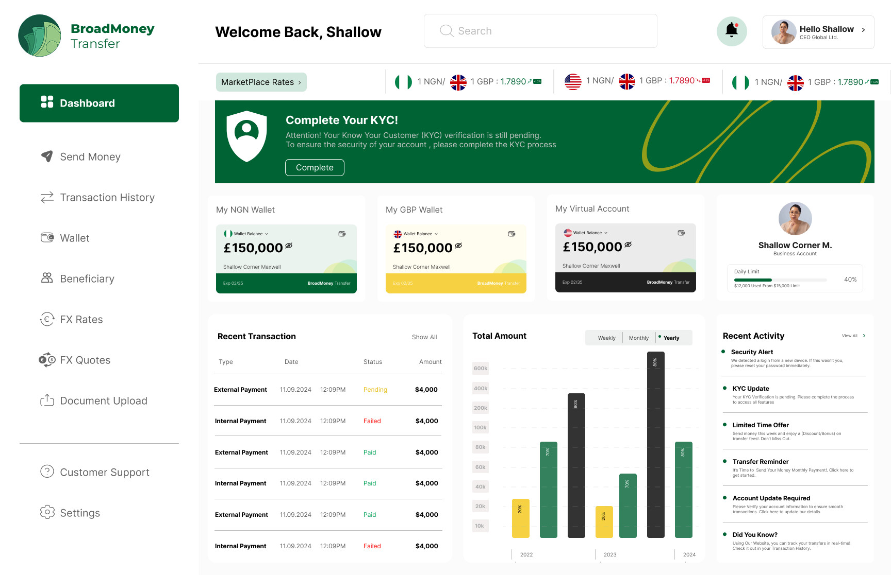
I didn't design in a vacuum. Every major redesign decision was informed by behavioral analytics data from three platforms — Microsoft Clarity for the marketing site and web app (heatmaps, session recordings, rage taps, dead clicks, quick backs, scroll depth), UXCam for mobile app session recordings and journey mapping, and PostHog for event-based funnel analysis and feature flag testing.
No design system existed when I started. I built a scalable Figma component library from scratch — color tokens mapped to BroadMoney's brand, a type scale optimized for financial data density, and reusable components for buttons, inputs, switches, cards, modals, and status indicators. The system covers both the consumer mobile app and the web dashboard, giving the engineering team a single source of truth that cut implementation ambiguity and reduced design-dev back-and-forth.
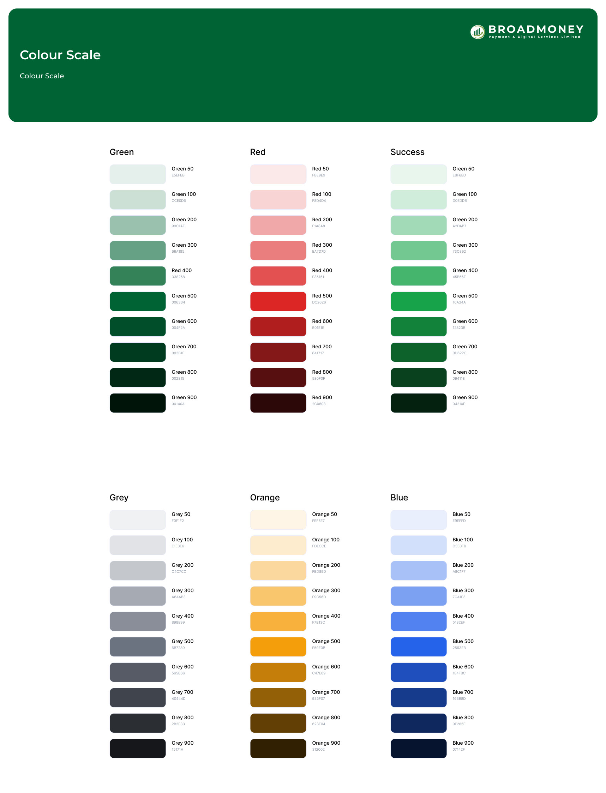
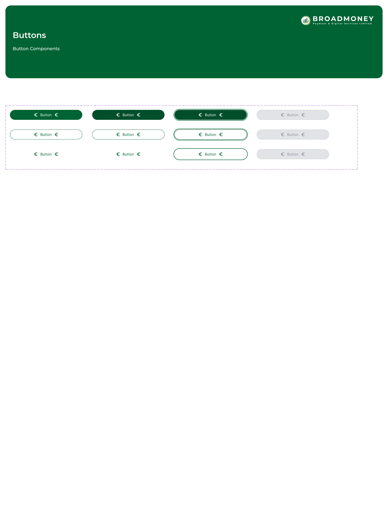
I redesigned the BroadMoney marketing site with product demo videos, blog content, and a conversion-optimized layout. Post-launch Clarity data confirmed the improvements — rage taps dropped from 0.17% to 0.05% and session duration rose 34%. The site now serves as both a trust-building tool and a conversion funnel into the mobile app.
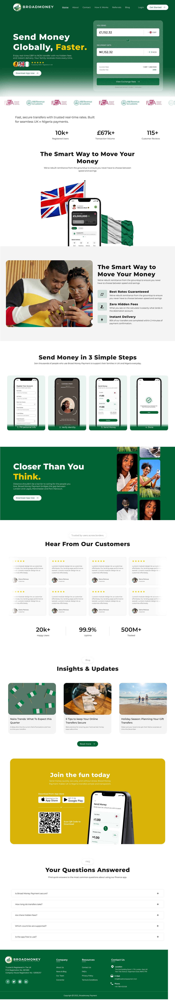
Supporting screens from across the app, web and design system. Tap any screen to open it full size.
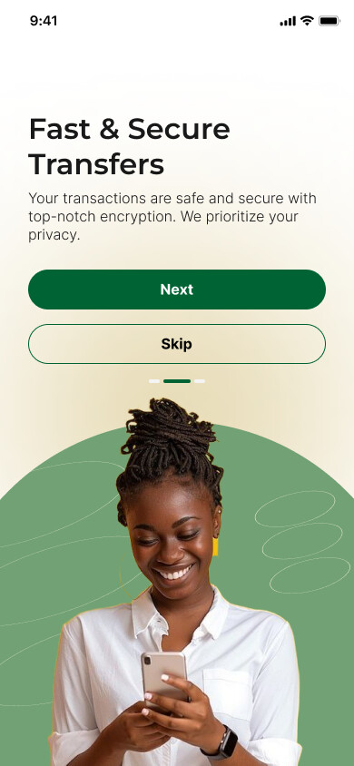
Onboarding — security Onboarding — low fees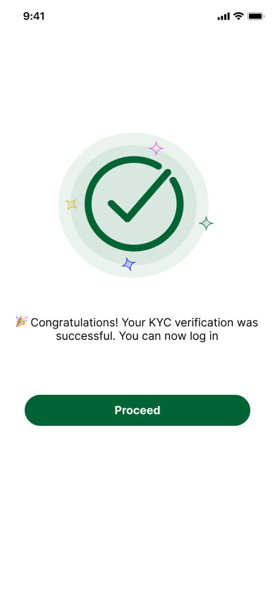
Welcome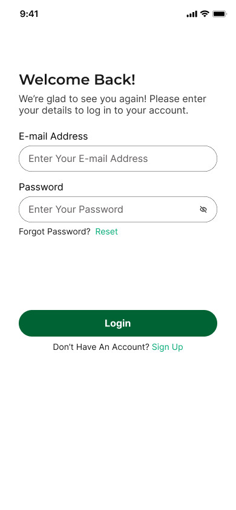
Login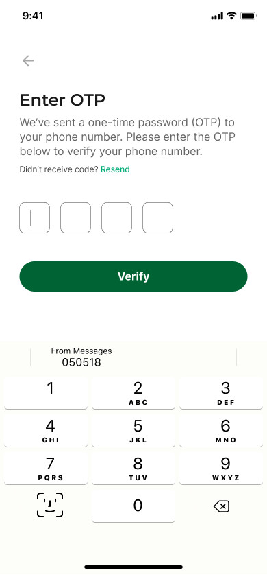
OTP verification GBP wallet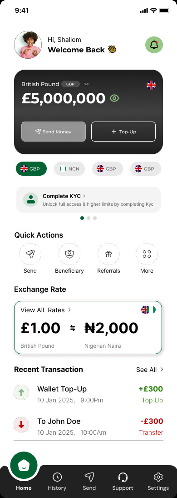
NGN wallet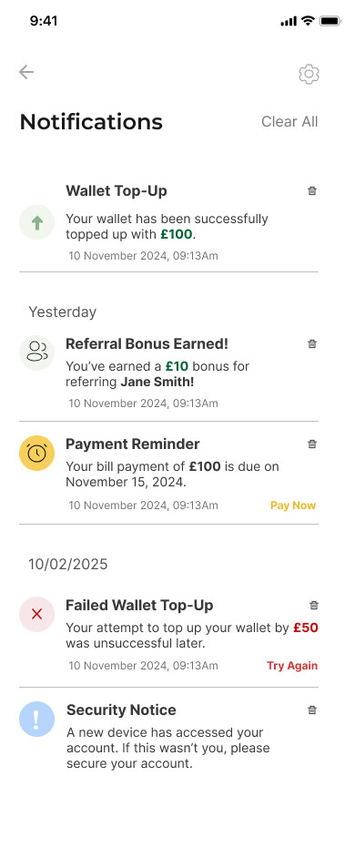
Notifications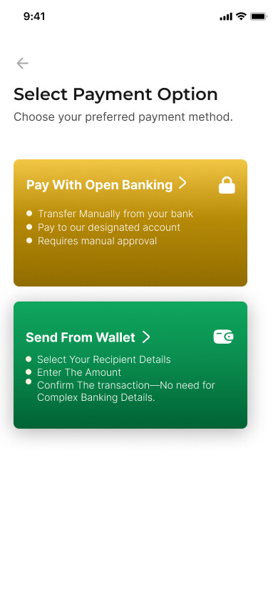
Transfer options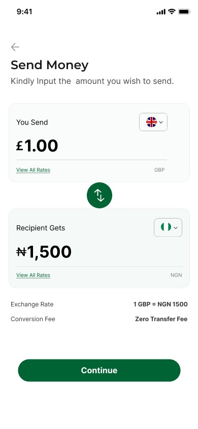
Send money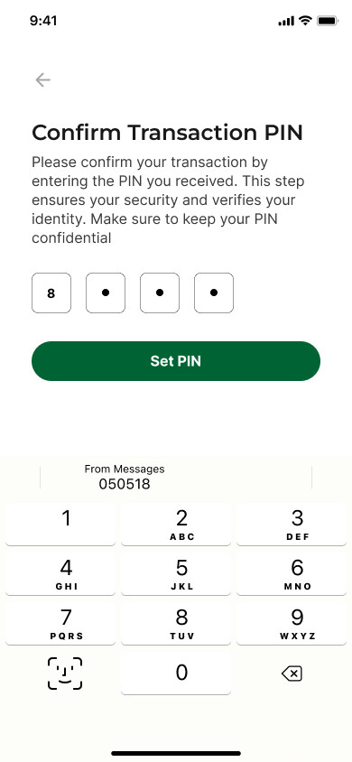
Transaction PIN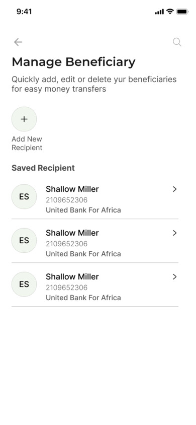
Beneficiaries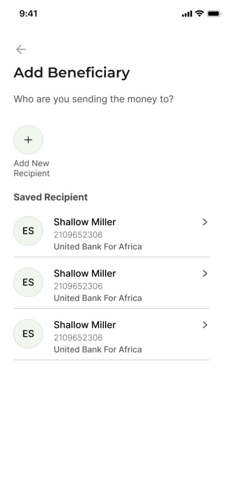
Recipient details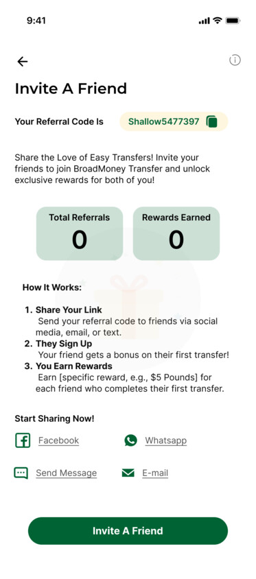
ReferralsPushing back on the balance card
The founder wanted smaller wallet cards on the dashboard so several currencies would show at once. I pushed back. A remittance balance has to display any amount in full — £5,000,000 should never shrink or get cut off to make room — and the balance is the first thing users check before they trust a transfer.
I proposed one full-width card per wallet that users swipe between, with currency chips underneath for quick switching. That’s the version that shipped.
Getting engineers to build from the system
A design system only works if engineers reach for it first. With the team shipping both mobile and web, I treated them as the system’s first users: if a component was slower to find, or harder to read than building it from scratch, it simply wouldn’t get used.
So I built it around how they work. Colour, type and spacing live as Figma variables (tokens) named to mirror the code, so a change to a brand colour updates everywhere in one move — in the design and in the build. Every component is annotated with its states and spacing, including the edge cases engineers usually end up guessing in a remittance app, like very long balances and failed transfers. Each pattern has a documentation page that explains when to use it, and when not to.
Handoff stopped being a back-and-forth about pixels. Engineering reported fewer design-related tickets after launch, and the same system now runs across the mobile app and the web dashboard.
What I’d do differently
The redesigned app launched to existing and new users across the UK-to-Nigeria remittance corridor. The progressive KYC approach and trust-building interface design directly addressed the drop-off problem that had been costing the business completed transactions. The founder cited the redesign as a key factor in their next funding conversation.
Engineering reported fewer design-related tickets post-launch, thanks to the design system providing clear, consistent component specifications across mobile and web. Continuous behavioral monitoring via Clarity, UXCam, and PostHog enabled data-driven iteration sprint over sprint.
How I measured this
Drop-off is the share of new users who signed up but never completed a first transfer. I tracked the app funnel (sign-up → KYC → first transfer) in UXCam, and the marketing site in Microsoft Clarity. When we moved app analytics to PostHog, I rebuilt the same funnel steps and events so the before and after stayed comparable.
Before the redesign, 54.75% of new users dropped off. After the new onboarding and progressive KYC shipped, that fell to 22%, and new users made 2.3× as many transactions in their first month.
What else changed: exchange rates moved over the same period, and better rates can lift transfers on their own, so I read the transaction uplift as partly market-driven. The drop-off improvement is easier to tie to design, because it happened at the exact steps we redesigned: KYC and the first transfer.
Currently open to senior product design roles — fintech, AI-native products, or complex digital systems. Remote or relocation.
Get in touch